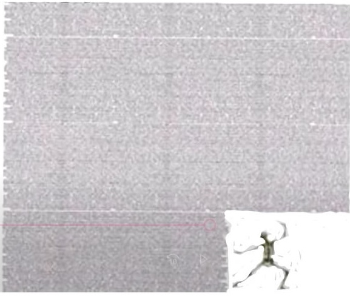
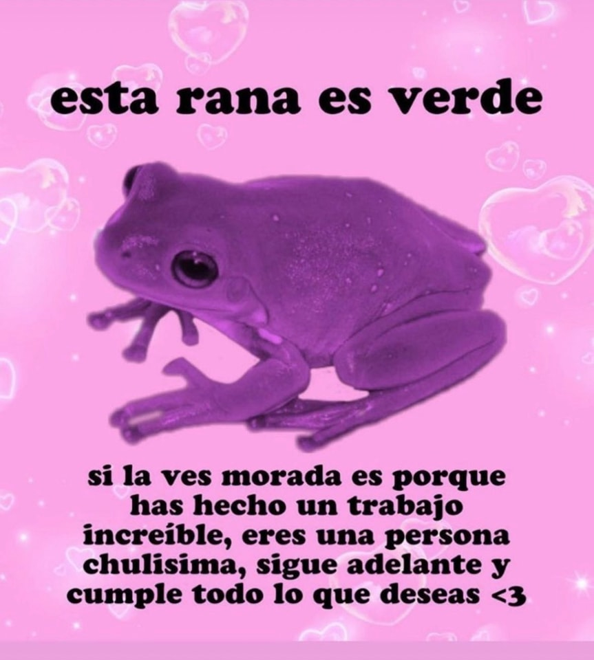

Holaa Janne, Primero que nada, buenos días y segundo, espero que al momento de leer esto esté todo bien!
Pues mira, me surgió esta idea de crear una página para demostrar un poco que aunque nos conocemos un poco, me importas y mucho. Otro poco de contexto, creo que te conté cuando nos conocimos sobre la página que hice de la escuela y se me ocurrió hacer algo igual. Donde podamos tener nuestra historia y cómo nos conocimos poco a poco. Creo que la honestidad funciona y siento que nunca había querido a una persona como a ti por alguna razón, tengo fe de que podamos funcionar y conocernos más. 💌
Y pase lo que pase, sea lo que sea, siempre contarás incondicionalmente con mi apoyo en todo.

También me gustaría decirte que
Después de que hablamos, pensé en más cosas que me gustaría que supieras, pero no me gustaría que fuera por WhatsApp porque cualquiera puede hacerlo, no cualquiera lo hace en una página
Empezando que, desde que te ví para que habláramos, cuando te encontré en canchas por un momento me quedé callado porque hace tiempo no te veía y juro que siempre estás linda, pero me quedé un poco quieto porque nunca creí que con solo verte mi día se alegraría
Agradezco el hecho de que hayamos podido arreglar los problemas que tuvimos, muchas veces los problemas en la vida son inevitables, muchas veces son agentes de cambio, tanto para bien como para mal, personalmente considero que este fue un cambio bueno para nosotros, el hecho de haber podido convertir algo que tal vez pense que ya era pérdida total para mi es algo bueno poderlo convertir en un nuevo comienzo porque, por algo te busqué nuevamente, por lo que siento por ti porque yo no pienso desertar de ese sentimiento pase lo que pase, cuando me dijiste que a ver si te soportaba y nos conociéramos más, pensé ¿Porqué no hacerlo?, no se trata de "soportar" para mi, si no de cuidarte siempre y estar para ti siempre que lo necesites. No hay nada que pueda cambiar lo que siento por ti por muy extraño que pueda sonar
No se trata de solo hablar por hablar, si no que las mismas acciones por si mismas lo hagan, porque yo soy más de demostrar las cosas que de hablarlas, espero que con el paso del tiempo podamos llegar a algo porque no quiero otra cosa que no sea estar contigo, porque de alguna manera te convertiste en alguien especial para mi en tan poco tiempo y siempre lo serás, si veo un futuro entre nosotros se ve muy bien, no te podría cambiar por nada y es un poco difícil expresar todo en palabras porque simplemente no las hay para explicar como me siento estando contigo y menos puedo describir la felicidad que sería tenerte a mi lado, hay veces en las que el tiempo fluye o que se dice que las cosas fluyan y espero que entre nosotros todo salga bien, no controlo tus sentimientos y no puedo tener la absoluta certeza de que pienses de mi o sientas por mi, pero puedo asegurarte que lo que te digo es real, espero que nos demos una oportunidad para demostrarte que todo lo que digo es verdad y que sepas que bajo el sol y la tormenta, siempre voy a estar firme hacia ti.
Igual, siento que sueno un poco empalagoso con todo esto jajajskq pero te quiero mucho Janne, y si, si daría hasta mi vida por ti si fuera necesario, eres una chica con una vibra genial y con metas por delante que estoy muy seguro que vas a cumplir.
Y otra cosa, recuerda que todo lo malo es momentáneo, pero saldrá todo bien y te lo digo porque veo en ti un potencial muy alto, se que llegarás tan lejos como te lo propongas y espero estar junto a ti siempre, porque, si estoy para ti en las malas también en las buenas siempre!

Por cierto, no se mucho de que música escuches, igual y no es el tipo de música que te guste, pero esta canción cada que la escucho me hace pensar en ti 👉🏻👈🏻
Nuestros Momentos
Espero algún día poder llenar esta galería dónde tengamos momentos juntos, y se que igual y suena medio raro todo esto, pero no tengo dudas de que es real lo que siento por ti 👉🏻👈🏻
Sitio Desarrollado con ❤️ por Ángel Samuel Reséndiz González